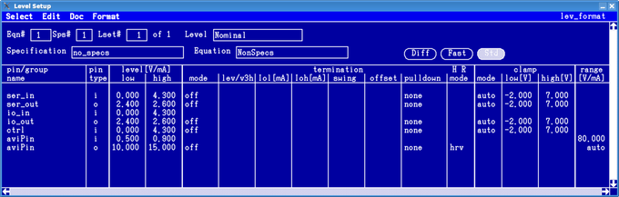

Elements of the Level Setup window
The Level Setup window contains four main views:
- I/O pins
- DPS pins
- I/O pins with Equations and Specifications
- FAST pins with Equations and Specifications
- DPS pins with Equations and Specifications

These views allow you to define the level parameters for all defined DUT pins.
In the I/O pins view define
- For input pins of the DUT:
- Voltage level to drive for a logic-high (`1') state
- Voltage level to drive for a logic-low (`0') state
- For output pins of the DUT:
- Threshold voltage to use, to decide if a DUT output is high
- Threshold voltage to use, to decide if a DUT output is low
- Termination type to use
- Active termination voltage to use for output pins
- Commutation voltage to set
- Active load to set
- Usage of clamp voltage or the active load
- Clamp voltage to set
In the DPS pins view define
- Voltage and current requirements of the DUT's power pins
- Off-state current definition
- VBUMP voltage
- Slew rate settings
- Rise and fall time settings
- The connect setup time
- Constant current check setting
- Connection state
- Force and clamp filter settings.
The Equations and Specifications views are essentially the same as the normal I/O Pins screen and the DPS Pins screen, except that they also show information on the particular equation set and specification set used.
Functional changes
- Introduced before SmarTest 6.3.2
- SmarTest 7.3.1: Parameters added for the DPS pins view.
- SmarTest 7.4.0: New columns "HR mode" and "range" in the I/O pins view.